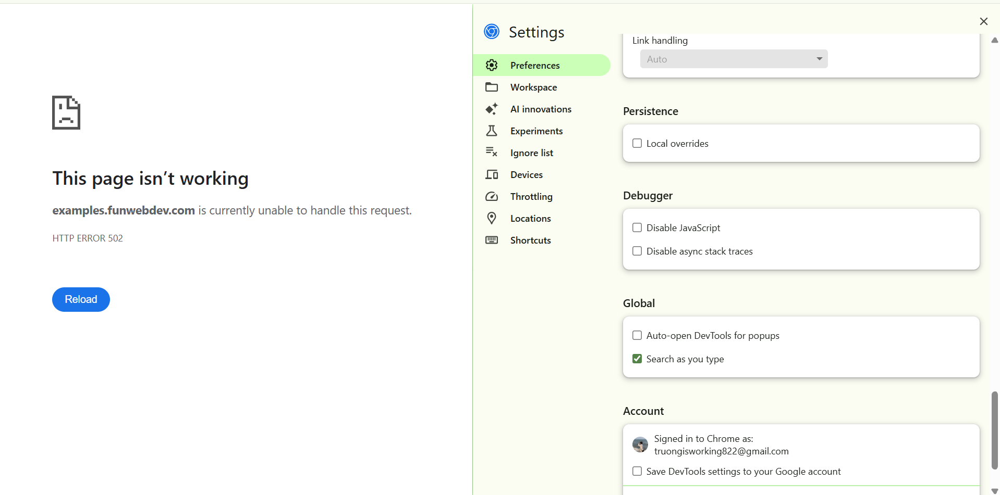
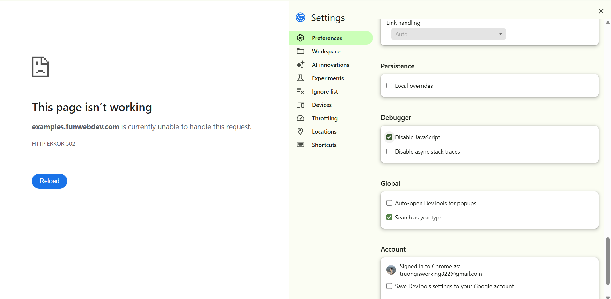

EXERCISE 8.1
Enabling/Disabling JavaScript
Đã thực hiện hai trạng thái bật và tắt JavaScript trong trình duyệt. Trang dịch vụ của giáo trình trả HTTP 502 ở cả hai lần thử, nên chưa quan sát được thông báo enabled/disabled từ dịch vụ.
URL trong giáo trình ↗

Ảnh ghi nhận thao tác và trở ngại thực tế. Không trình bày lỗi HTTP 502 thành thông báo kiểm tra thành công của dịch vụ.
Xem Lab08.pdf